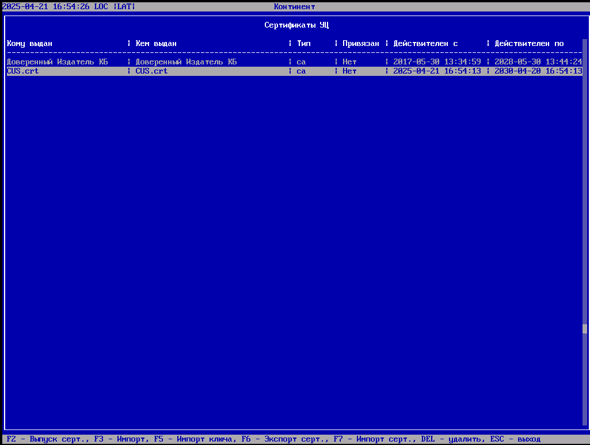
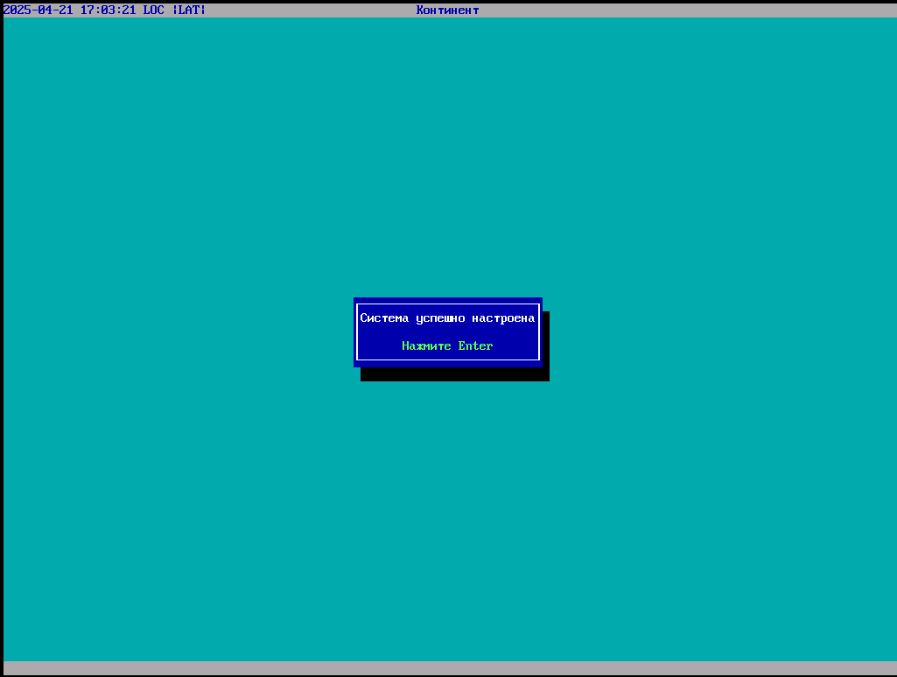

Развертывание и инициализация ЦУС
Развёртывание и инициализация ЦУС
2. Установка системы
Загрузитесь с носителя и начните установку. На экране приветствия выберите Install MilliSec NGFW.
выберите язык интерфейса

установка программы
выбираем тип платформы "Настраиваемая"

Вводим идентификатор шлюза. номер находится на устройстве "в нашем случае, пока произвольно"
в верхнем левом углу выводит сообщение что Функция СКЗИ временно отключена, чтобы под ключить следуйте
переходим в инструменты

Затем Ключевая информация
после Программынй датчик случайных чисел

далее
далее Источник энтропии
Выбираем источник энтропии на (*)Псевтоненератор
далее вводим строку "test_mode" и нажимаем enter
все готово (Обратите внимание, что уведомление об СКЗИ пропала)

3. Инициализация ЦУС
Заходим в Главном меню в Инициализация

выбираем инициализацировать устройство как "(*)Узел безопасности с центром управления сетью (ЦУС)"
устанавливаем пароль доступа к локальному меню

Выбираем шифр в нашем примере RSA и ГОСТ

идет процесс инициализации

инициализация УСПЕШНО. по окончании инициализации обязательно настройте время.

в Главном меню заходим в Сертификаты
Создаем первый сетрификат. это Сертификаты УЦ

Нажимаем F2 - выпуск сертифиата
Выбираем Выпуск корневого сертификата
Заполняем своими данными и нажимаем Enter
возвращаемся в предыдущее меню

созданный нами сертификат действителен на протяжении 5 лет и присутствует в списке 
Далее выпускаем "Сервисные сертификаты"

Нажимаем F2 выпуск сертификата

Выпускаем сервисный сертификат для ЦУС
Заполняем своими данными

Созданный сертификат добавляем в ранее созданный корневой сертификат и нажимаем Enter
Сервисный сертификат успешно создан сроком на один год

Производим настройку ЦУС

нажимаем ДА

Выбираем ранее созданный сервисный сертификат и нажимаем Enter
создаем пароль для встроенного администратора "admin" с соблюдением парольной политики. требующая минимальной длины пароля от 8 символов и комбинации 4 типов символов (заглавные, строчные, цифры и специальные символы)
выбираем интерфес, который будет смотреть на компьютер на котором будет установлем Менеджер конфигурации (МК).

задаем IP адрес 192.168.10.10 с маской 255.255.255.0
Шлюз устанавливаем IP адрес компьютера где установлен МК

Внимательно проверяем введенные данные и нажимаем ДА
начинается процесс настройки ЦУС [3/19]
Готово. Нажимаем Enter
